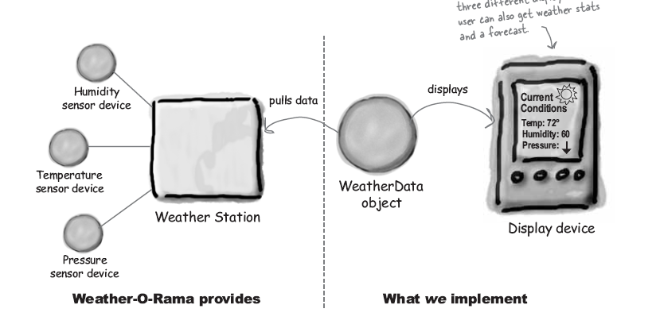
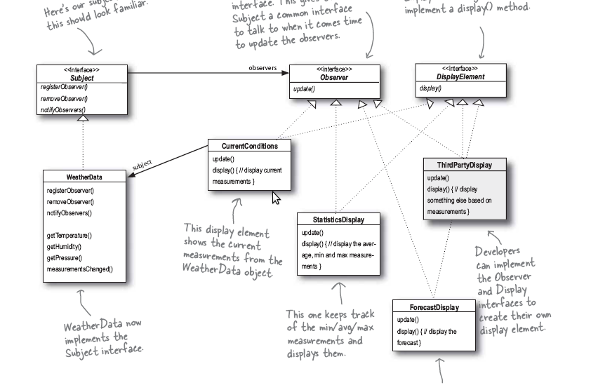

observer 在对象之间定义了一个 一对多 的关系,所以 当一个对象状态变化时,其它的所有依赖对象会得到通知,并且 自动更新.
一个天气预报的服务商请你开发不同呈现形式的天气服务,可能包括:
参见下图:
最初我们可能会按照如下的思路进行:
class WeatherData
{
void measurementsChanged()
{
float temp = getTemperature();
float humi = getHumidity();
float pres = getPression();
currentConditionDisplay.update(temp, humi, pres); //更新当前的显示
forcastDisplay.update(temp, humi, pres); //更新天气预报
}
}
但是存在的问题是明显的:
因此我们使用 observer 模式来完成,使得 subject 和 observer 松耦合.
注解
subject 即被依赖者,亦即 被观察者, 它的变化会影响 观察者 的状态 observer 即依赖者,亦即 观察者, 它的会依赖于 subject 的变化
具体的 observer 类图如下:
注解
需要注意的是下面的实现采用的是 push 的方法,即 subject 将所有的信息 push 给 观察者, 当然 观察者 也可以实现 pull 来获取自己 感兴趣的变化.
可以参见p67页的讨论.
下载请点击 这里
1 2 3 4 5 6 7 8 9 10 11 12 13 14 15 16 17 18 19 20 21 22 23 24 25 26 27 28 29 30 31 32 33 34 35 36 37 38 39 40 41 42 43 44 45 46 47 48 49 50 51 52 53 54 55 56 57 58 59 60 61 62 63 64 65 66 67 68 69 70 71 72 73 74 75 76 77 78 79 80 81 82 83 84 85 86 87 88 89 90 91 92 93 94 95 96 97 98 99 100 101 102 103 104 105 106 107 108 109 110 111 112 113 114 115 116 117 118 119 120 121 122 123 124 125 126 127 128 129 130 131 132 133 134 | #include<iostream>
#include<vector>
#include<string>
using namespace std;
class Observer
{
public:
virtual void update(float temp, float humidity, float pressure){}
};
class Subject
{
public:
virtual void registerObserver(Observer o){};
virtual void removeObserver(Observer o){};
virtual void notifyObserver(){};
};
class DisplayElement
{
public:
virtual void display(){};
};
class WeatherData:public Subject
{
public:
vector<Observer*> observers;
float temperature;
float humidity;
float pressure;
void registerObserver(Observer *o)
{
observers.push_back(o);
}
void removeObserver(Observer *o)
{
for(int i=0; i<observers.size(); i++)
if (observers.at(i) == o)
{
observers.erase(observers.begin()+i);
break;
}
}
void notifyObserver()
{
for(int i=0; i<observers.size(); i++)
{
observers[i]->update(temperature, humidity, pressure); // 这是一种 push的方式
}
}
void measurementsChanged()
{
notifyObserver();
}
void setMeasurements(float temp, float hum, float pres)
{
temperature = temp;
humidity = hum;
pressure = pres;
measurementsChanged();
}
float getTemperature(){return temperature;}
float getHumidity(){return humidity;}
float getPressure(){return pressure;}
};
class CurrentConditionDisplay:public Observer, public DisplayElement
{
private:
float temperature;
float humidity;
public:
void update(float temp, float humidity, float pressure)
{
this->temperature = temp;
this->humidity = humidity;
display();
}
void display()
{
cout<<"Current Conditions"<<endl;
cout<<"temperature:"<<temperature<<endl;
cout<<"humidity:"<<humidity<<"%"<<endl;
cout<<endl<<endl;
}
};
class ForcastConditionDisplay:public Observer, public DisplayElement
{
private:
float temperature;
float humidity;
float pressure;
public:
void update(float temp, float humidity, float pressure)
{
this->temperature = temp;
this->humidity = humidity;
this->pressure = pressure;
display();
}
void display()
{
cout<<"Forcast"<<endl;
cout<<"temperature:"<<temperature<<endl;
cout<<"humidity:"<<humidity<<"%"<<endl;
cout<<"pressure:"<<pressure<<endl;
cout<<endl;
}
};
int main()
{
Subject *s;
WeatherData weather;
s = &weather;
CurrentConditionDisplay currentDisplay;
CurrentConditionDisplay currentDisplay2;
ForcastConditionDisplay forcastDisplay;
weather.registerObserver(¤tDisplay);
weather.registerObserver(¤tDisplay2);
weather.registerObserver(&forcastDisplay);
weather.setMeasurements(80,62,30.4);
weather.removeObserver(¤tDisplay2);
weather.setMeasurements(80,62,30.4);
return 0;
}
|
输出结果为:
Current Conditions
temperature:80
humidity:62%
Current Conditions
temperature:80
humidity:62%
Forcast
temperature:80
humidity:62%
pressure:30.4
Current Conditions //移除了一个观察者,则不再对其更新状态
temperature:80
humidity:62%
Forcast
temperature:80
humidity:62%
pressure:30.4